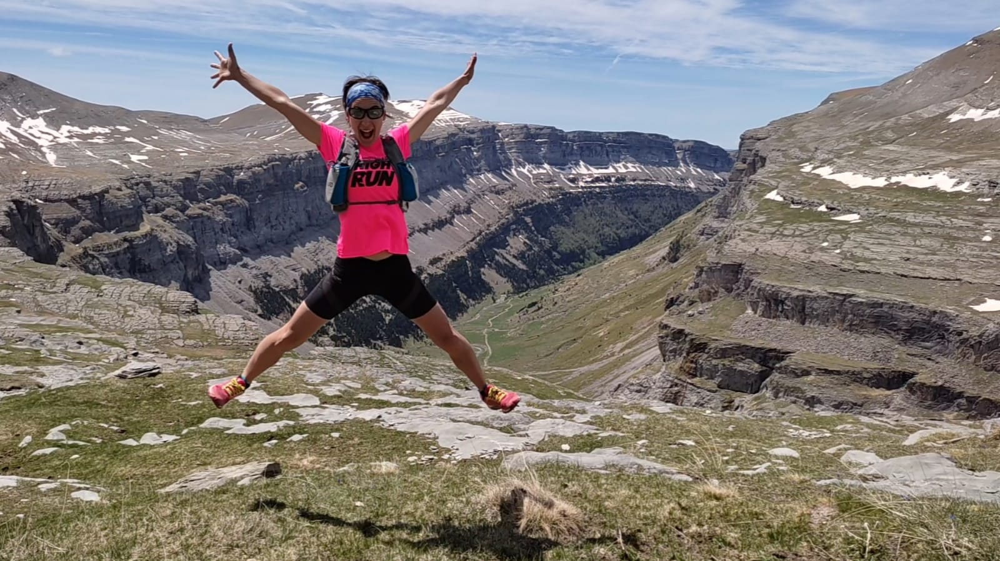

Para colegios e institutos
Acercar la montaña a los más jóvenes
Es mucho más que hablar de deporte. A través de charlas y talleres dinámicos comparto conocimientos sobre seguridad en montaña, material básico, alimentación, hábitos saludables y preparación física y mental, adaptándolo siempre a cada edad y contexto.
Además, trabajamos valores como la constancia, el respeto, el trabajo en equipo, la superación y una visión inclusiva y cercana del deporte. Un espacio para inspirar, educar y despertar nuevas formas de vivir el movimiento y la aventura.
- Seguridad en montaña
- Material básico
- Alimentación
- Hábitos saludables
- Valores